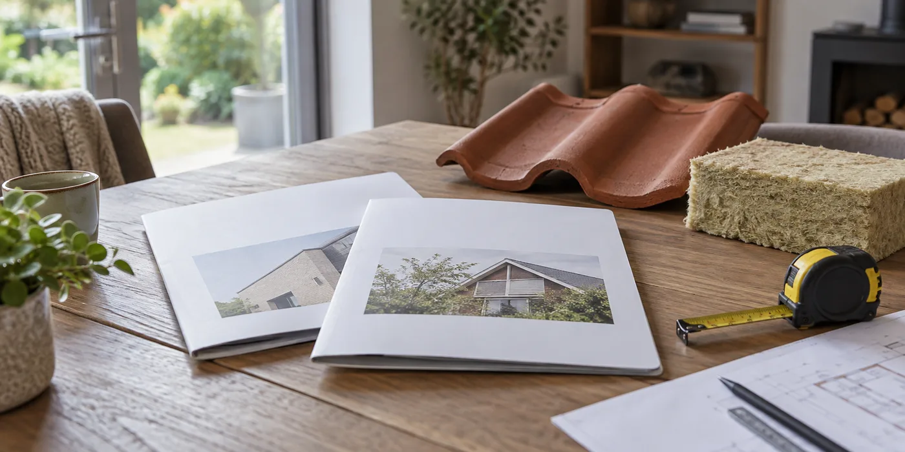

Maak één gemeenschappelijke werkomschrijving
Gebruik voor beide aannemers dezelfde oppervlakte, dakdelen en gewenste afwerking. Laat op de offerte beschrijven welke lagen worden verwijderd, welke behouden blijven en welke nieuw komen. Vraag hoe de toestand van het houtwerk wordt gecontroleerd. Zonder die afbakening vergelijk je twee verschillende renovaties, ook als beide documenten dezelfde woning vermelden.
Kijk voorbij het zichtbare materiaal
Steigers, werfinrichting, afvoer, aansluitingen en tijdelijke bescherming zijn minder fotogeniek dan nieuwe pannen, maar wel onderdeel van de opdracht. Vraag waar dakramen, schoorstenen en overgangen naar een plat dak staan. Laat een stelpost of voorlopig bedrag uitleggen: waarvoor dient het, waarop is het gebaseerd en wanneer wordt het definitief?

Maak wijzigingen controleerbaar
Vraag hoe extra werken worden gemeld en goedgekeurd. Een foto van verborgen schade, een beschrijving van de oplossing en een prijs vóór uitvoering maken de beslissing concreet. Vergelijk ook betaalmomenten, planning en opleverdocumenten. Kies niet automatisch de offerte met de langste lijst; kies de aanbieding die je werkelijk begrijpt en die de afgesproken opbouw volledig beschrijft.
Vergelijk ook wat buiten de opdracht valt
Een uitsluiting is niet automatisch onredelijk, maar je moet ze wel herkennen. Vraag wat met bestaand schilderwerk, zonnepanelen, leidingen en moeilijk bereikbare delen gebeurt. Laat uitleggen welke schade pas na afbraak beoordeeld kan worden. Markeer die posten in je vergelijking en bespreek hoe een beslissing tijdens de werf wordt genomen. Het goedkoopste voorstel kan alsnog passend zijn, zolang je bewust kiest voor de omschreven scope en de open punten begrijpt.
Van één totaalprijs naar een controleerbare opdracht
Begin je vergelijking met de grens van de opdracht. Welke dakvlakken horen erbij, waar stopt de nieuwe afwerking en welke bestaande onderdelen blijven? Dat is vooral belangrijk bij een woning met een aanbouw, dakkapel of zonnepanelen. Laat iedere aanbieder dezelfde uitgangstekening of beschrijving gebruiken. Een verschil in werkomschrijving mag blijven bestaan, zolang je het kunt herkennen. Zet een afwijking daarom naast de betrokken post en vraag waarom de aannemer die oplossing kiest. De vergelijking wordt zo een hulpmiddel om keuzes te begrijpen, in plaats van een ranglijst van bedragen die verschillende werken voorstellen.
Hoe lees je voorlopige bedragen?
Een voorlopig bedrag kan bedoeld zijn voor werk dat pas na het openen van het dak goed beoordeeld kan worden. Vraag of het een raming, een beperkte hoeveelheid of een afzonderlijk te beslissen opdracht betreft. Laat beschrijven waarop de inschatting steunt en hoe een afwijking wordt gemeld. Maak ook onderscheid tussen een hoeveelheid die verandert en een andere uitvoering die later nodig blijkt. Hetzelfde bedrag bovenaan een offerte kan daardoor heel anders werken in de praktijk. Je hoeft die onzekerheid niet volledig weg te nemen; je moet weten wanneer je daarover een nieuwe beslissing krijgt.
Waarom materiaalnamen alleen niet volstaan
Twee offertes kunnen dezelfde dakpan noemen, maar verschillen in onderdak, isolatie en aansluitingen. Vraag daarom om de opbouw als geheel te beschrijven. Een materiaalkeuze is pas beoordeelbaar met de bestaande toestand en de voorgestelde verwerking erbij. Houd de technische beoordeling bij de dakwerker, terwijl je zelf controleert of de onderdelen terugkomen in de offerte. Laat ook eventuele alternatieven afzonderlijk uitleggen. Een voorstel met een duurder materiaal kan een andere afwerking omvatten; omgekeerd kan een lagere materiaalprijs niets zeggen over de totale opdracht. Het vergelijken van merknamen vervangt die uitleg niet.
Een vergelijking die je daadwerkelijk kunt gebruiken
Maak een blad met de onderdelen die voor jouw woning belangrijk zijn. Vul per aanbieder in: inbegrepen, uitgesloten, voorlopig of nog onduidelijk. Schrijf geen nul wanneer je een post niet terugvindt. Vraag de ontbrekende informatie na en werk daarna je overzicht bij. Bewaar de datum van de offerteversie, zodat een gewijzigde prijs en een gewijzigde opdracht niet ongemerkt door elkaar lopen. Gebruik dit blad tijdens een gesprek met de aannemer. Een antwoord dat je begrijpt is waardevoller dan een document waarin ieder vakwoord staat maar de omvang van het werk onduidelijk blijft.
Wanneer ben je klaar om te kiezen?
Je hoeft niet te wachten tot ieder risico verdwenen is. Wel wil je de gekozen opbouw, belangrijkste uitsluitingen en aanpak van onvoorziene schade begrijpen. Kijk daarnaast naar planning, bereikbaarheid en het aanspreekpunt tijdens de werken. Vraag op welke manier opmerkingen bij de oplevering worden opgevolgd. Een compleet besluit bevat dus zowel technische keuzes als praktische afspraken. Bewaar de uiteindelijke offerte en de bevestigde verduidelijkingen samen. Dan kan een vraag tijdens de werf teruggaan naar de afgesproken opdracht, zonder dat je moet reconstrueren wat in een eerste telefoongesprek bedoeld werd.
Praktische vergelijking
| Post | Wat leg je vast? | Wat vergelijk je? |
|---|---|---|
| Dakopbouw | Bestaande en nieuwe lagen | Dezelfde renovatiescope |
| Voorlopig werk | Aanname en beslismoment | Hoeveelheid en werkwijze |
| Afwerking | Ramen, goten en aansluitingen | Inbegrepen onderdelen |
| Meerwerk | Vaststelling en akkoord | Beslissing vóór uitvoering |
Een praktisch voorbeeld
Offerte A lijkt lager, maar vermeldt geen nieuwe dakgoot. Offerte B doet dat wel. Vraag A dezelfde post toe te voegen en vergelijk daarna opnieuw, in plaats van het verschil meteen als prijsvoordeel te zien.
Illustratief scenario, geen klantcase.
Neem dit mee naar je gesprek
- Sloop en afvoer
- Onderdak en isolatie
- Bedekking en bevestiging
- Aansluitingen en goten
- Steigers en bescherming
- Meerwerk en oplevering
Veelgestelde vraag
Is een prijs per vierkante meter genoeg?
Alleen als je ook weet welke lagen, details en bijkomende werken die prijs omvat.
Bron en achtergrond
Buildwise: officiële of technische achtergrond bij dit onderwerp ↗
Geraadpleegd op 13 oktober 2026. De praktische checklist en het voorbeeld zijn redactionele uitwerkingen. Fabrikantinformatie geldt voor de beschreven producten; ze is geen algemene garantie voor andere systemen.
Wat betekent dit voor jouw woning?
Gebruik de calculator voor een eerste indicatie. Een vakman beoordeelt jouw situatie en bevestigt de uitvoering en definitieve prijs.
Bekijk de dakwerkencalculator →